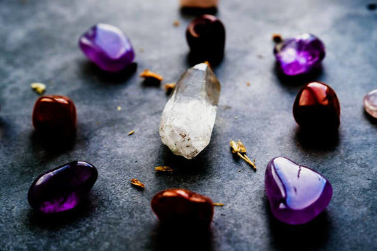

A teoria e prática da cristaloterapia se baseiam nos efeitos curativos e restauradores de cristais especiais, aplicados em determinadas áreas do corpo. De acordo com o esoterismo, esses elementos naturais possuem propriedades terapêuticas, que ajudam a restaurar o equilíbrio físico e emocional.
O conhecimento sobre o poder dos cristais é milenar. Alguns exemplos próximos são as tribos indígenas como os cherokees, navajos, tupi-guaranis, entre outras. Esses povos ancestrais há muito tempo já conheciam e sabiam usar as propriedades curativas dos cristais. Os egípcios antigos também cultivavam o uso de cristais, além de outras antigas civilizações. Atualmente, os resultados dessa prática têm atraído até mesmo médicos naturistas e holísticos.
A utilização de cristais e pedras preciosas em processos de cura, também chamada de gemoterapia e cristalterapia, apresentam muitos aspectos positivos. Veja alguns motivos para você investir nessa técnica: